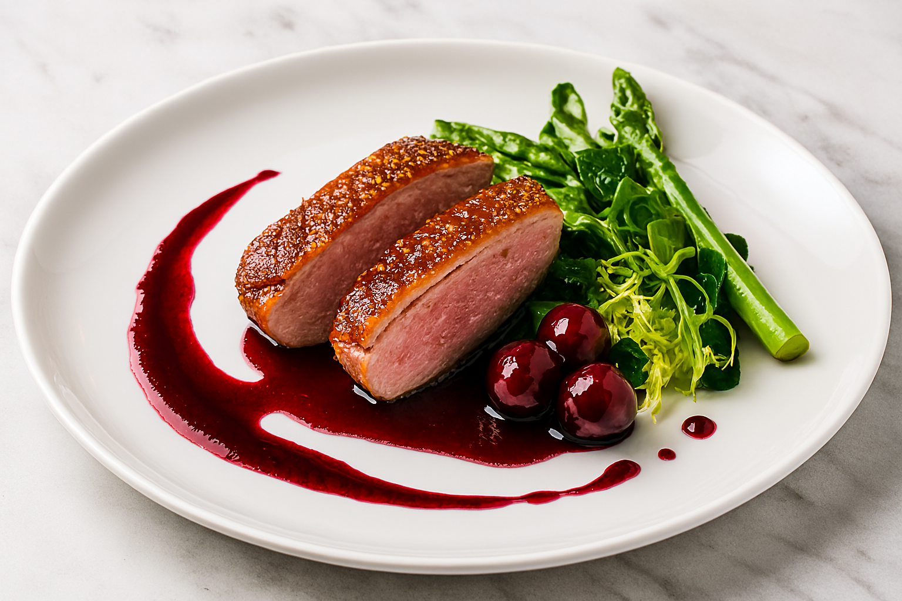

Duck Breast With Cherry Gastrique

Ingredients:
- 2 duck breasts
- 1 cup cherries, pitted
- ½ cup sugar
- ¼ cup apple cider vinegar
- ½ cup chicken stock
- 1 tbsp butter
- Salt, pepper
Instructions:
- Score duck skin, season, and sear skin-side down until crisp.
- Flip and cook to medium-rare (57°C / 135°F).
- Caramelize sugar, add vinegar, reduce.
- Add cherries and stock, simmer until thick.
- Finish with butter, serve over sliced duck.
Home